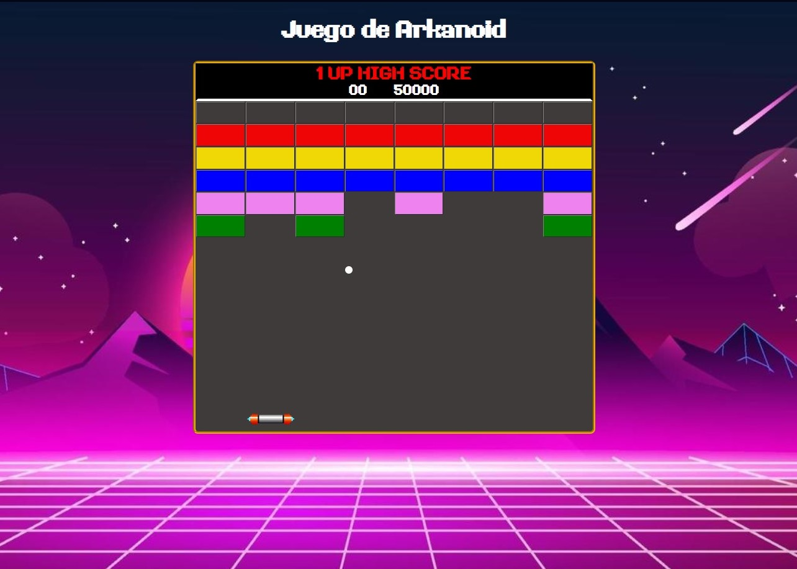

Desarrollé mi primer proyecto como desarrollador web para AMG Cartotec en Torre-Pacheco, Murcia. Durante 5 semanas, creé y diseñé su sitio web, así como su catálogo de productos y servicios. A medida que adquiría experiencia en desarrollo web, refiné y perfeccioné el proyecto para lograr los resultados actuales.
La página que estás viendo ha sido desarrollada con la guía y
enseñanzas de mi profesor, Raúl Rodríguez Mercado.
Puedes visitar su
repositorio en GitHub.
Este proyecto fue realizado como parte de una práctica grupal para la asignatura de Lenguaje de Marcas. Trabajamos en colaboración para crear un sitio web para la empresa ficticia TRANSLOGIC S.A. Agradezco especialmente a mis compañeras Elizabeth y Angela por su contribución al proyecto.
Este proyecto consistió en la creación de una versión (no funcional) del clásico juego Arkanoid utilizando tablas HTML. Utilizamos CSS para simular los elementos del juego y mejorar su apariencia visual. Fue una buena práctica que nos permitió explorar el uso de tablas en HTML y ganar más control sobre CSS.
En este proyecto, nos inspiramos en la famosa serie Breaking Bad para crear una página de presentación temática. Utilizamos HTML y CSS para diseñar y estructurar la página, incorporando elementos visuales y referencias al estilo visual de la serie.
©Web Personal creada para la materia de Lenguaje de Marcas
del CFGS ASIR / DAM / DAW